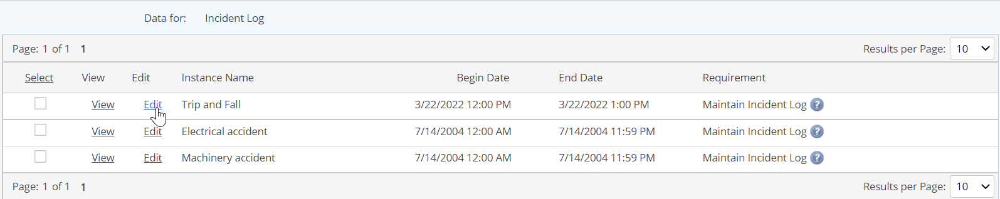

You may edit the data form for an event to add or modify information for an event.
If a task is associated with the event and the task is still open, the event data should be entered through the task completion form rather than by editing the instance manually, in order to document task completion as well.
Event forms may be viewed and edited easily from the Portal app, by clicking on the Form icon in the Event panel. The following instructions apply only to editing event forms from the Management System.
To edit data for an event:
Select the event log in the Requirements view, right click and select Data > Enter/Edit.
The event log records are displayed.
Select the Edit link for the instance you want to edit.

The form for the event is displayed, showing the fields available for documenting the instance.
Edit the fields as applicable.
Fields that are created automatically from system data, such as the duration of the event and the applicable regulatory limits, are not editable.
Select Save.
Events that are associated with different requirements may be edited in bulk to supply identical information for all instances.
Edit multiple event instances
You can select and edit multiple event instances at once.
Select the event instances to edit. Instances must be for different requirements. You cannot edit two instances for the same requirement.
Select Edit. The form appears for entering the details of the events. Fields with existing data that is not identical is not displayed for editing. Only common fields with common or empty values are displayed for editing.
After completing your entries, click Save. A confirmation messages appears. You can click Back to Data Edit to return to the View/Enter/Edit Event Data screen.